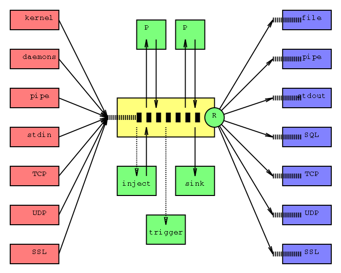

A proposal for an enterprise-class system logger architecturev0.4 - 2002/09/25
0. RationaleEven though the layout of this document is quite "academic", i'm not going to make an academic introduction. Syslog is old - i'm talking here about the classic, BSD syslog, that's used as the implementation of the Unix system logging specifications on most Unices today, and about most of its variations.The limits of it are obvious for anyone trying to make it scale, or to make it work in complex and large deployments. It doesn't do well under high load. Its filtering rules are too simplistic. It's not extensible (not easily anyway). It only supports simple output formats, and only the text output is really used at all. It was designed having in mind the needs of a fairly primitive Unix kernel, and nothing else; for example, there's no support to make it work as a centralised logging facility for all the popular Unix services; this leads to the ridiculous situation where each daemon has to reinvent the wheel and create its own logging routines. The data flow is too linear. It cannot take advantage of multiple CPUs. The security decisions in the implementation are fine, but that's just because they don't exist at all. Simply put, it's obsolete. A replacement is needed. The architecture discussed below addresses a few of the mentioned problems. It does not intend to specifically address all of them, but a fairly large number of them, and provide a foundation to support future extensions to eventually solve all of these problems, and perhaps others not mentioned here. These ideas were initially conceived by the author while deploying msyslog on SGI's network, and while working to solve all the issues that typically appear when dealing with system logging on large networks. 1. Large-scale view1.1. The modularity requirementThe first requirement for a good implementation is that it has to be modular - not only as in "different functions are in different parts of the source code", but as in "different functions run in different execution units (processes, threads) in the OS, and are contained in different binaries that do not necessarily share the same source code heritage but just common interfaces".There are numerous advantages to this approach. The development is simpler because the goals for each piece of code are simpler. It's easier to get third-party contributions, pretty much the same way Adobe Photoshop got it's enormous pool of plugins written by programmers all around the world. The hardware resources (especially CPU) are better spent when particularly overloaded pieces of code are contained in separate execution units. The security is much improved when the input, the actual processing and the output are separated into different processes/threads that do not necessarily trust each other, like in the examples of Qmail, Postfix or the recent OpenSSH versions. 1.2. The three-phases approachWhile the information travels under the hood of the system logger, there are three distinct phases: input, processing and output.Input means all activities required to collect information from various sources, pack it in adequate containers, perhaps pre-process it slightly, and place it in a queue (or many) waiting for the second phase. Processing implies the bulk of work done on top of the data: sorting it, marking it, preparing it before the actual storage, modifying it, perhaps even create and inject new messages in the stream based on previous and present data, or triggering and sending signals to the outer world based on data content, or even deleting some messages altogether. This phase too ends up with placing data in queues. Output means delivering data to the destinations, whether those are various storage facilities, or other applications or daemons. A modular implementation should naturally facilitate this three-phases approach. 1.3. The flowchartThe picture below is the core of this proposal, and indeed contains in a nutshell most of the ideas exposed before and after it. |

The flowchart
2. Implementation trivia2.1. Daemons and configurationsThe data pipe and the Regex module might as well be merged together, since their relative positions are fixed. In fact, the flowchart reflects this possibility, by drawing them partially superposed.The various modules should be different binaries, running as separate daemons that communicate via shared memory or other mechanisms. The unnecessary daemons are not activated when the main daemon (pipe/Regex) is launched. If the implementation is ever going to be threaded, special attention has to be paid to preserve the order of the messages. The main data pipe may or may not contain more than one message at one time. That depends on the implementation, and this document does not impose any restriction of that order. The concept of "pipe" might be used simply to describe the way the processing daemons plug themselves into the flow of data, or as a way to describe and enforce the order of the data processing. There are strong similarities between the selection made by the Regex module at the end of the data pipe, and the individual selections made by each processing module. So, the main module (pipe + Regex) and the processing modules might actually share a piece of code: the Regex selector itself, but the actual selection for individual processing modules should not run in the main process (that one carrying enough load already because of the final Regex). Related to the previous paragraph: all messages are "touched" by each processing module that inserts itself into the data pipe. However, only some of them are actually modified, hence the need for regex in the processing modules. Each daemon should have its own configuration file. The data pipe should be started by the user or by the system; the other daemons should be started by the data pipe, based on the main config file. When starting the child daemons, the main one (the data pipe) should specify the config file for each one of them; notions like "base directory for daemons" and "base directory for configs" might be useful. 2.2. QueuesThe reason to draw one queue at the entrance of the main daemon (as opposed to have one queue at the exit of each input module) is: the order of the messages should be preserved when they go through syslog, which cannot be enforced when messages are pushed through multiple parallel queues. However, there's also a problem: when multiple input daemons compete for access to the queue, they might block each other.The other solution is to assign queues to the exits of each input module, and make the main daemon poll the queues (and pull the messages out of them). This solution is block-free (the input daemons cannot block each other), but i don't see any simple method to enforce the preservation of the order of messages. In fact, i'm not sure how important it is to preserve a strict order. Ideas are welcome. 3. Taking it even further3.1. The "daemons" input moduleMost of the things said before assume that the messages processed by this (collection of) daemon(s) are system log messages (syslog). But, until now, nothing in this structure prevents the daemons collection to go even further.Theoretically, specialized input modules could be written, to enable popular Unix services (Apache, Sendmail, Squid...) to send their messages to the modular syslog. Of course, there has to be some degree of support in the daemons themselves; but, being Open Source, the support might not be very difficult to obtain, especially when people will see the advantage of it. Of course, that means the classic Unix-style syslog message structure is not enough anymore. Some extensions have to be defined; see next paragraph. I believe there is a great potential to this idea. It could be "the" fix for the lamentable state of affairs that plagues logging in the Unix world. 3.2. Message formats, APIs, etc.What is actually needed in the modular daemon is to define message types, only one type (classic syslog) being used in the beginning of the implementation, and other types being assigned to other classes of messages (Apache log, Apache error, Squid log, Squid error...) in the future. In fact, a namespace can be defined, and assign pieces of it to each major service; like: a 2-byte integer for the service (Apache, Squid, etc.), and a 2-byte for each service (internal types, like Apache access, Apache error, etc.); or any other classification that works.The output modules should be aware of these special message types; for some modules (output to file) this might not be a big issue (although the problem is not quite trivial), but for some other (output to SQL) it might be a fairly important one. At this moment, i don't see any method to define a message structure that's extensible without requiring continuous tweaks to the output modules (but that doesn't mean there is no such thing). Regarding the actual format of the messages, these might or might not be plain text. Anything from XML to pure binary formats could be used. An interesting idea is to identify pieces of messages that are seen very often in syslog messages (or other types of logs), assign them an index in a table, and log only the index; this might be a great benefit, especially for SQL-based logging, in terms of speed (for inserts, but especially for lookups) and storage space. Extensible interfaces and APIs should be defined in the beginning. Being 100% modular, this architecture could be extended by third party contributors, and the extensions (input, output and processing modules) might as well not share any code at all with the original implementation. 3.3. Data pipes in the input and outputIn theory, there is no reason why the input and output modules themselves should not get smart :-) and implement their own staged data pipes, allowing for local processing of the data, running their own processing daemons, etc.However, while the main data pipe is a necessity, pipes in the in/out modules are a luxury. It is not needed to implement them from the beginning. But again, everything being modular, a "smart" in/out module can be written at any time, by a third party or whatever, without impacting the rest of the modular syslog. 4. ApplicationsThis modular structure has enough flexibility to enable all kind of uses:
Great care has been taken to ensure the architecture scales up well, but also to not forget small-scale implementations; in systems where the memory is not to be wasted, unnecessary daemons can be simply turned off. |